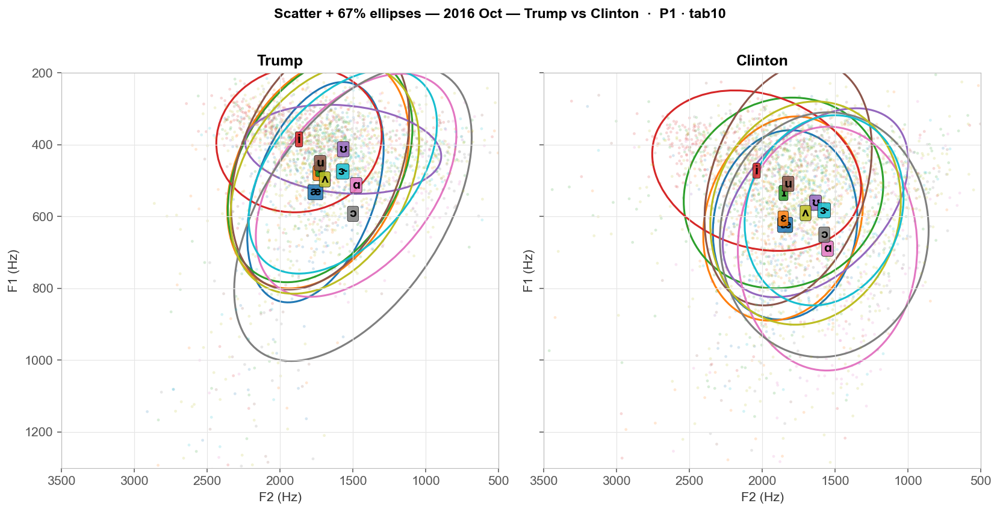
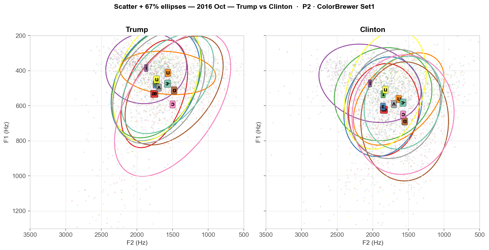
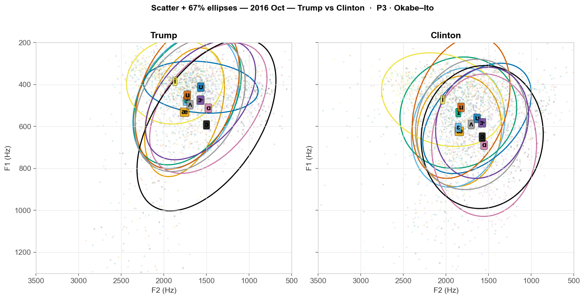
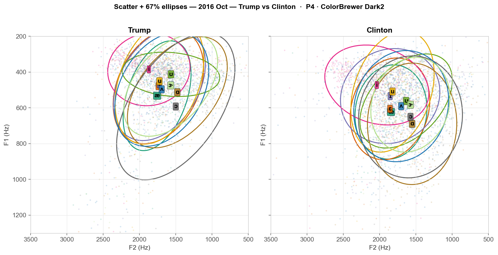
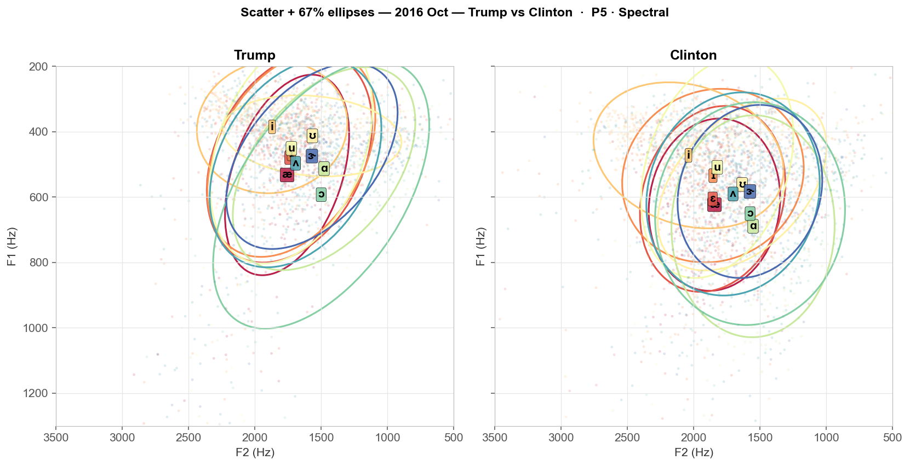

Same data (2016 Trump vs Clinton, scatter + 67% ellipses per vowel), rendered with 5 different palettes for the 10 monophthongs. Tell me which (P1–P5) to apply across all debates.
matplotlib classic — highly distinct, saturated primaries.

Bold ColorBrewer qualitative — red, blue, green, purple, orange...

8-color colorblind-safe palette (extended to 10). Stats/viz standard.

Muted but distinct — good for scatter with overlap.

Rainbow-ish (red→yellow→blue) — vowels ordered left→right suggests a scale.
